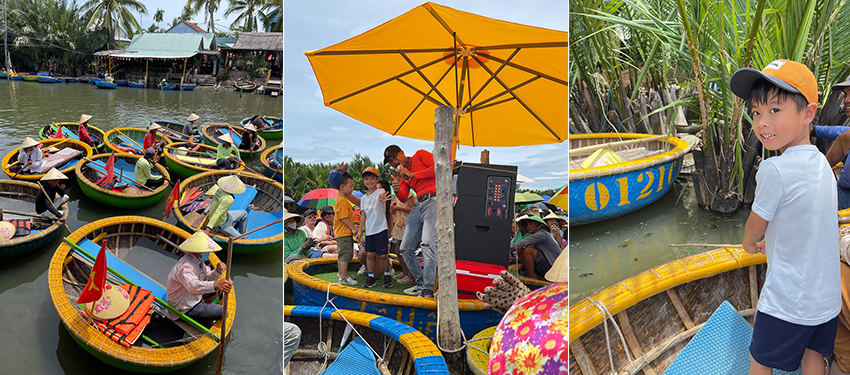
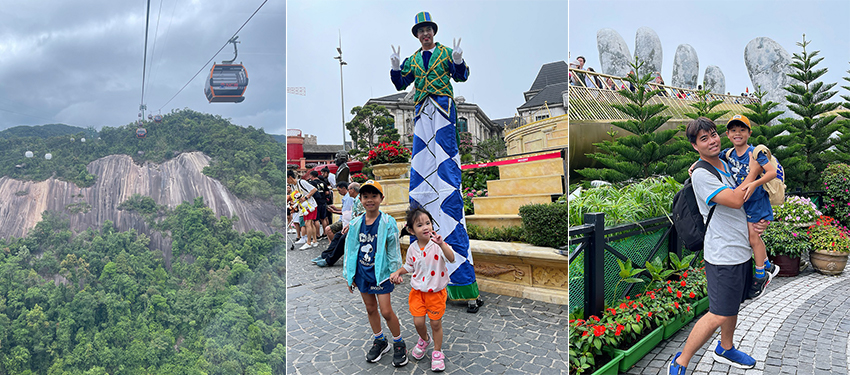
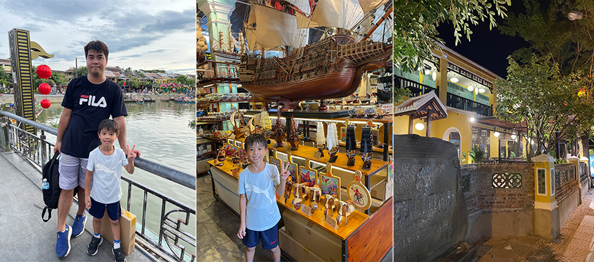
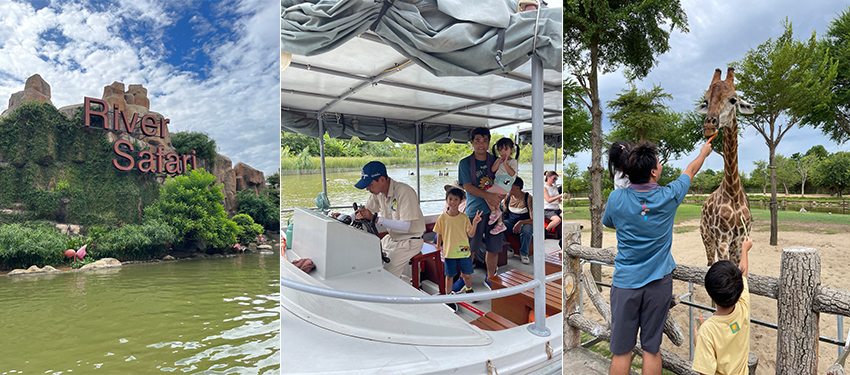
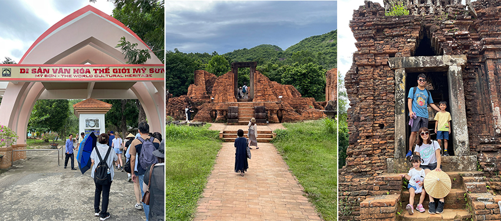
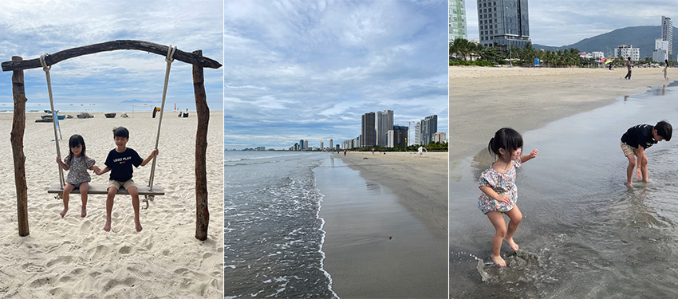

在過去的幾十年裡，越南的河內和胡志明市一直是國際旅客的熱門目的地，這兩座城市不僅擁有豐富的歷史和文化遺產，還充滿了現代都市的活力與繁華。然而，隨著時代的變遷，越南旅遊的焦點逐漸轉移，峴港和富國島這兩個地區正迅速崛起，成為新的旅遊熱門景點，吸引著來自世界各地的遊客。今年趁著小孩暑假，我們安排了五天四夜的峴港之旅。峴港位於越南中部的城市，具有東方夏威夷的美稱，從蔚藍的海水到綿延的沙灘，再到豐富多彩的活動，每一處都充滿驚喜，這次的峴港之旅探索了數個景點，深感其值得一遊，推薦大家到峴港玩時不妨可以安排在行程裡。
迦南島原生態體驗－碗公船＋樂釣螃蟹趣
迦南島主要以水椰林及原始的⾃然⽣態風光而聞名，島上居⺠⼤多以捕⿂及⽊雕維⽣， 在越南峴港的旅行中，最難忘的莫過於乘坐碗公船，這種傳統的圓形竹船是當地漁民的特色交通工具，不僅充滿歷史感，還帶著幾分有趣和新奇。一踏上碗公船，立刻感受到當地漁民的熱情，他們手腳靈活，熟練地在水道間駕駛著竹筏，帶領我們穿梭在椰林的水道之間，河邊的水鄉風景美得讓人忍不住想多看幾眼。乘船的過程中，還觀賞到當地漁民的歌舞表演，他們在河上載歌載舞，笑聲和歌聲此起彼伏，這讓我們真正感受到了越南文化的活力與魅力。除了觀光和表演，還有釣螃蟹的有趣體驗，漁民熱心地教我們如何使用竹竿來捕捉螃蟹，這項活動充滿挑戰，即便最後沒釣到螃蟹，卻也讓我們的旅程變得更加豐富有趣。
|  |
巴拿山－巨手金橋、百年酒窖、法國山城
巴拿山是峴港旅程中絕對不能錯過的亮點之一。我們乘坐世界上最長的纜車一路升到山頂，沿途美景如畫，不僅有壯麗的山脈，還能欣賞到茂密的熱帶森林。當纜車緩緩升起，俯瞰下方的風景，雲霧繚繞的景象讓人感覺像在天空中翱翔，仿佛進入了夢幻仙境。到達山頂後，最先映入眼簾的是壯觀的法國村，這座模仿中世紀法國小鎮的建築群落，充滿了濃厚的歐洲風情，讓人恍若置身於歐洲小鎮，此外，山上還有令人興奮的遊樂園，各種刺激的遊樂設施，適合全家人一起遊玩。巴拿山上最著名的景點當屬巨手黃金橋，這座橋由兩隻巨大的石手托起，金光閃閃，已成為全球遊客爭相打卡的熱門景點。我們當然也在這裡拍了無數張照片，這個地標性的景點絕對是峴港之旅中不可錯過的體驗。
|  |
會安古城
會安古城是一個古代的貿易港口，此鎮距離峴港東南方大約30公里。這裡曾是中古時代中國、印度和日本的海運交易據點，因文化彙集交流，古城擁有許多保存完好的古老建築，從中式到日式，甚至還有西式的風格。這些建築使得古城充滿了歷史的氛圍，像是走進了時光的隧道，還被列為世界文化遺產。古城範圍不大，我們隨意步行在古城中，參觀了日本橋、福建會館以及各式各樣的傳統手工藝商店，還在古城中購買了手工藝做的木船，非常值得留做紀念。會安古城古樸中帶著一絲悠閒，處處顯露了獨特的文化氣息，是體驗當地文化的好地方。
|  |
南會安珍珠樂園－水上動物園
南會安珍珠樂園結合了現代化的遊樂設施與越南傳統文化，進入樂園後，發現這裡的設計非常用心，每個區域都擁有獨特的主題，無論是充滿異國情調的「冒險樂園」，還是再現越南傳統生活的「民俗文化村」，都讓我們在遊樂之餘，能夠深入了解越南文化的多樣性。我們到樂園裡搭乘了幾項遊樂設施，讓人既能感受到刺激的遊玩樂趣，又能沉浸在豐富的文化氛圍中，是一個充滿驚奇與樂趣的地方。在這樂園中，最特別的是⽔上野⽣動物園，我們搭乘小船，沿著蜿蜒的水道悠閒地遊覽整個動物園區。隨著船隻緩緩前行，兩岸的茂密植被與自然環境令人彷彿置身於原始叢林中，這種與動物們近距離接觸的體驗讓人既興奮又有些冒險感。在遊覽的過程中，我們看到許多動物在岸邊悠閒地活動，有忙著吃草的斑⾺、犀⽜和鹿群、還有慵懶的袋鼠以及威風凜凜的獅群，這裡的動物們似乎都生活得很舒適，自然的棲息環境加上足夠的空間，使牠們看起來非常自在。途中船會停靠⼩島，這裡有個特別的互動環節，我們上島後⾃⾏買了蔬菜和水果，讓孩子們親⾃體驗餵食⻑頸鹿和⼤象且享受了與動物親近的樂趣，這讓他們興奮不已，真是一次難忘的體驗！沿途還有專業的導遊為我們講解每種動物的習性與有趣的知識，不僅讓整個遊覽過程更加豐富，也增添了不少教育意義。回程時，水道兩旁還會出現成群的白鶴、天鵝和五彩斑斕的水鴨，這種與眾不同的遊覽方式讓我們感到格外驚喜，絕對是一個不可錯過的地方。
|  |
美山聖地
美山聖地為越南重要的考古遺址之一，曾是古代占婆王國的宗教中心，展示了古老文明的輝煌歷史與文化。走進遺址區，我被那一座座紅磚建築所震撼，歷經千年風雨後，依然堅韌地矗立著，散發著一種無法言喻的莊嚴。每一片磚瓦、每一尊神像的雕刻都細緻入微，彷彿在訴說著古代工匠的心血與智慧。在這裡漫步，我們不僅感受到歷史的厚重，還學習了許多關於占婆文化的知識，孩子們對這些古老而神秘的建築充滿好奇，他們的目光不斷地在每一個細節上停留，美山聖地的每一個角落都蘊含著豐富的歷史與文化，是一個令人深思的地方。
|  |
美溪海灘
美溪海灘是峴港最著名的海灘，這裡的沙灘綿延數公里，細膩的白沙與湛藍的海水相映成趣，因而被評為世界上最美的海灘之一。當我們漫步在沙灘上，腳下的沙子溫暖而柔軟，讓人不禁想脫下鞋子親自感受。聽著浪花輕拍岸邊的聲音，感受大自然的美好，海風輕輕拂過，帶來海水的鹹味和令人心曠神怡的清新氣息，讓整個人都放鬆下來。孩子們一頭扎進清澈見底的海水中，享受那片刻的清涼與歡樂，他們的笑聲在空中迴盪，為這片美麗的景色增添了活力。沿著沙灘走，周圍不乏各式餐廳，可以邊品嚐新鮮的當地海鮮，邊欣賞這無與倫比的美景，美溪沙灘是一個讓人流連忘返的地方。
|  |
這次峴港之旅讓我們一家人充滿了美好的回憶，不僅感受到自然美景，深入了解了越南豐富的歷史和文化，還品嘗了各種越南小吃如春捲、越式河粉和越南冰咖啡，峴港無疑是一個值得再訪的旅遊勝地，推薦給每一位計劃前往越南的旅客，不妨考慮將峴港納入您的行程，享受這片土地帶給您的驚喜與愉悅。